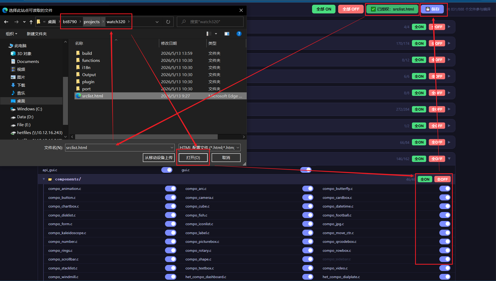

环境安装与工程编译
本节整理自 platform/README.md，用于完成本地工具链、Python 环境和示例工程的首次构建。
安装编译工具链
解压项目配套的编译链工具包，建议放在不含空格和中文字符的固定目录。
将编译器的可执行文件目录加入系统
PATH环境变量。重新打开终端，运行工具链的版本命令，确认系统能够找到编译器和
make。

验证工具
在 PowerShell 中确认关键命令能够执行。实际编译器命令名称以工具包为准。
make --version
python --version

安装 Python
安装项目支持的 Python 3 版本，并确保 python 命令已加入 PATH。Python 用于生成源码清单、构建文档和执行工程辅助脚本。
编译示例工程
进入目标工程目录并执行 make：
cd .\projects\watch320
make
构建成功后，固件输出位于：
projects\watch320\Output\bin\app.dcf
生成源码配置
工程源码和头文件列表由配置脚本生成：
cd .\projects\watch320
python gen-srclist.py
生成结果包括 inclist.mk 等构建清单。源码开关通过工程的 X1 工具箱配置，并由构建脚本读取。

首次构建检查
终端能够找到
make、编译器和python。工程路径不包含会干扰脚本解析的特殊字符。
gen-srclist.py执行后，工程清单与当前功能配置一致。make完成后，确认app.dcf的更新时间与本次构建一致。